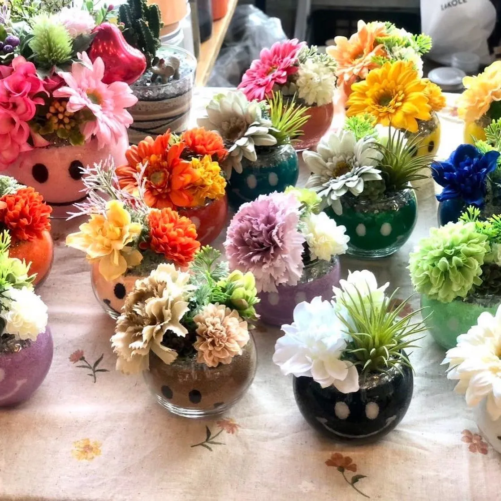
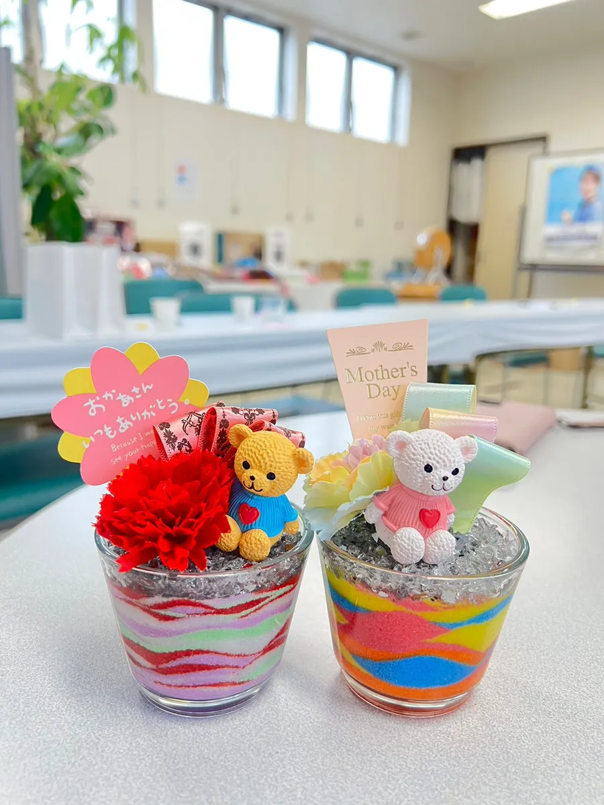

ある高齢者施設さまにお招きいただき、サンドアート体験を開催しました。約50名の皆さまに、色とりどりの砂を重ねて植物サンド・飾り物サンドづくりを楽しんでいただきました。座ったまま短時間で完成し、作品がそのまま残る——高齢者施設のレクリエーションにも取り入れやすいサンドアート体験について、ご紹介します。
※ご依頼先の施設さまのご意向により、施設名・参加者が特定できる写真は掲載していません。掲載写真は植物サンド・飾り物サンドの作品例です。
今回の開催概要
- ご依頼：高齢者施設さま（施設名は非掲載）
- 人数：約50名
- 内容：サンドアート体験（植物サンド・飾り物サンド）
- 形式：出張ワークショップ（材料準備・進行・片付けまで対応）
「利用者さまみんなで楽しめるレクをしたい」「準備や片付けの負担が少ないものがいい」——そんなご相談から実現しました。講師が材料一式を持参し、テーブルに座ったまま参加いただける形で進行します。サービスの詳細は企業・施設向けのイベントページもご覧ください。
植物サンド・飾り物サンドとは
サンドアートは、透明な器に色の砂を少しずつ重ねて模様を作っていくクラフトです。今回楽しんでいただいたのは、次の2つのスタイルです。
- 植物サンド：重ねた砂の上に多肉植物やサボテンなどを添えるスタイル。みずみずしい緑が映え、飾ったあとも長く楽しめます。
- 飾り物サンド：お花や小さなマスコットなどを飾るスタイル。季節やテーマに合わせて、華やかに仕上がります。

どちらも、砂の色の組み合わせや飾りの選び方で一人ひとり違う作品に仕上がります。糊や特別な道具は使わず、砂を注いで飾るだけなので、手先の力に自信がない方でも安心して取り組めます。
高齢者施設のレクリエーションに向いている理由
サンドアートは、次のような点で高齢者施設・デイサービスのレクリエーションに取り入れやすい体験です。
- 座ったまま、短時間で完成：お一人あたり短時間で仕上がり、長く集中し続けなくても大丈夫です。
- 手指をやさしく動かす：砂を注ぐ・飾りを置くといった動作で、自然と手先を使います。
- 「失敗」がない：どんな色を重ねても素敵な模様になるので、仕上がりに差が出にくく、達成感を得やすいです。
- 作品が残る：完成品はそのままお部屋や居室に飾れます。季節の思い出として形に残ります。
- 会話が生まれる：色選びや飾りつけを通して、スタッフさん・参加者同士の会話のきっかけになります。

約50名・大人数でもスムーズに
今回のように人数が多い場合も、テーブルごとの班分けや時間帯を分けた入れ替え制で、無理なく全員にご参加いただけます。材料・道具は講師がすべて持参し、会場のセッティングから片付けまで対応しますので、施設スタッフさまの準備負担はほとんどありません。人数・会場・ご希望の所要時間に合わせて進行をご提案します。
高齢者施設・福祉施設でのレクリエーションのご相談
準備・片付け不要、座ったまま短時間で楽しめるサンドアート出張ワークショップ。福岡・博多を拠点に全国対応、遠方はオンラインも。
「うちの施設の規模でもできる？」など、お気軽にどうぞ。
高齢者施設・福祉施設への出張について
nicolonは、高齢者施設・デイサービス・障害者施設など、さまざまな福祉施設さまへ出張しています。福岡・博多を拠点に全国47都道府県へ対応し、遠方の場合はオンライン開催もご提案できます。見積書・請求書の発行にも対応していますので、施設の予算・稟議にも合わせやすい体験です。
まずはお気軽にご相談ください
24時間以内に返信いたします。人数・ご予算・ご希望に合わせて最適なプランをご提案します。全国出張OK、遠方はオンラインでも対応します。

原野 玲未REMI HARANO
日本サンドアート協会 認定講師 / Webデザイナー
福岡県在住、5児の母。企業から福祉施設まで、年間100件以上の出張ワークショップを開催しています。
「誰でも簡単に、美しい作品が作れる」をモットーに、参加者全員が笑顔になれる時間を心がけています。